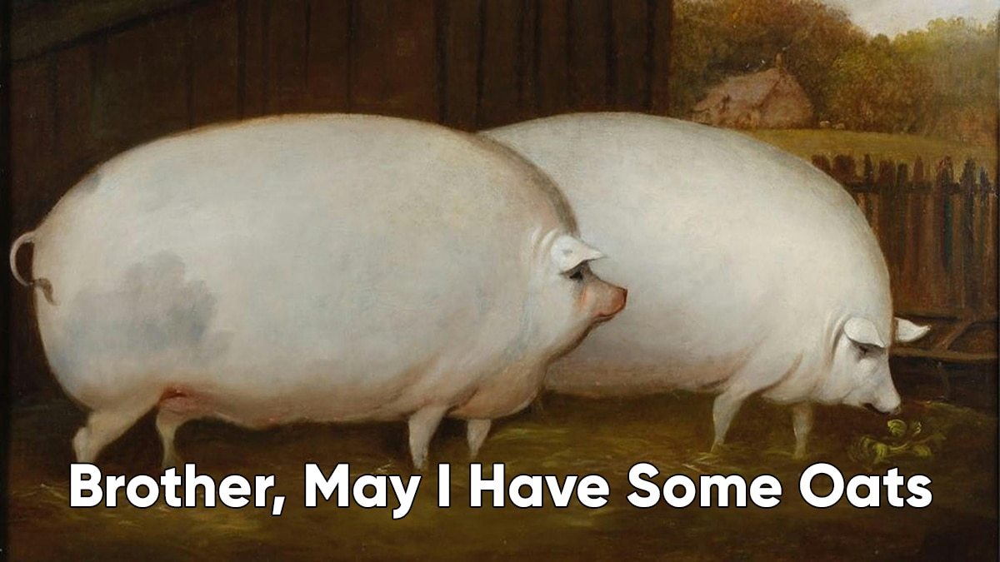
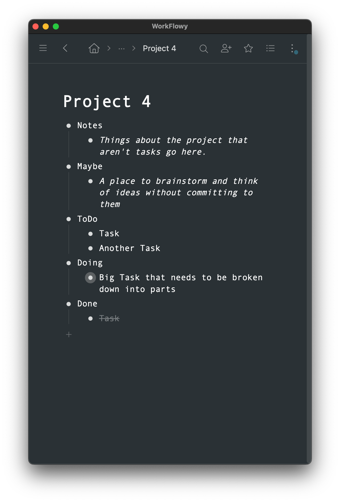
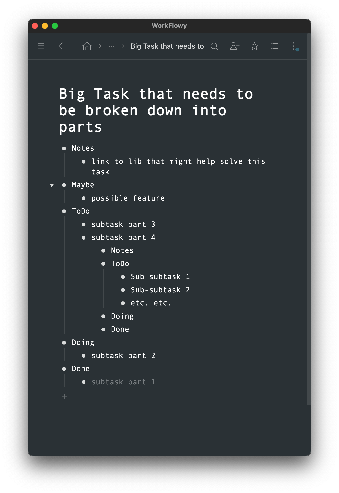
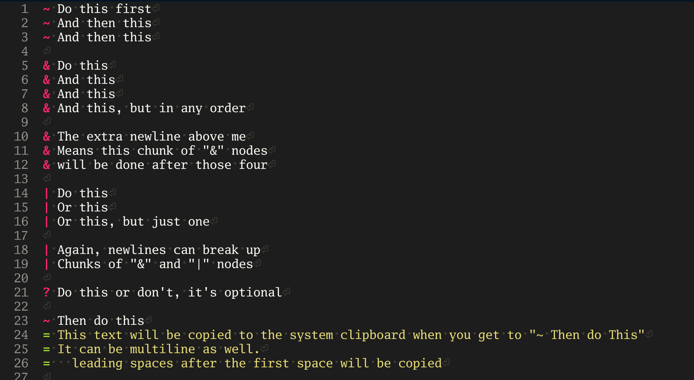
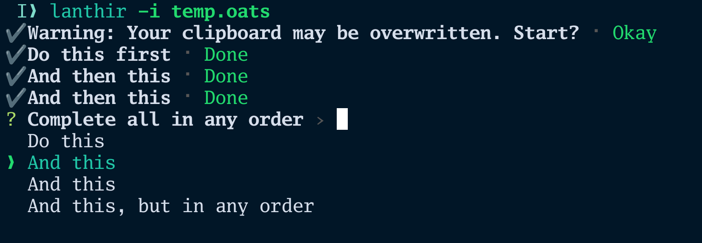
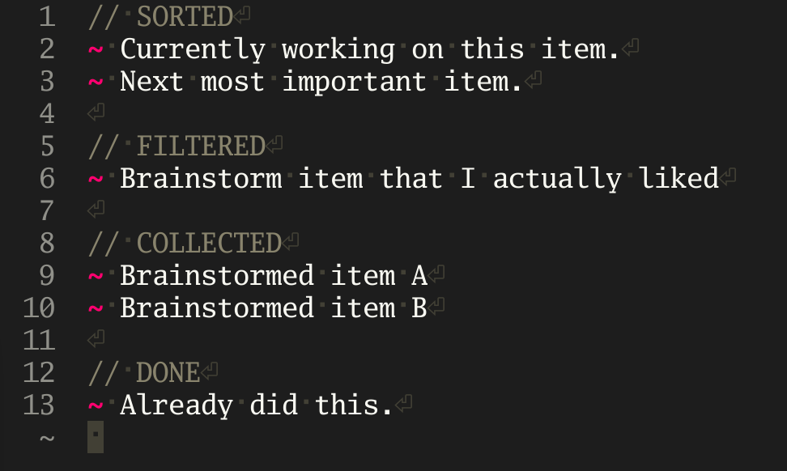

On Notes and To Do Lists
TL;DR
I went from the regular Kanban pattern of ToDo -> Doing -> Done in a web-app to Collected -> Filtered -> Sorted -> Done using local files in a domain specific language with the file extension .oats.

Kanban
In an effort to combat the friction of context switching between tasks I started taking notes using a simple form of Kanban (ToDo, Doing, Done) that I could nest inside of itself as needed. So large tasks that needed to be broken up into subtasks would get a new instance of Kanban inside of the large task.
WorkFlowy
The best software I found for this task was WorkFlowy. It has virturally infinite nesting of nodes. (I don’t use WorkFlowy anymore, but it was a formative stepping stone)
This is a project with nested Kanban in WorkFlowy.

Clicking on a child node Big Task that needs to be broken down into parts navigates to a new page where that node is now the main parent node.

Brainstorming
Sometimes I wanted to do some brainstorming and record it within the nested Kanban structure. I started by adding a brainstorm node in the notes section.
- Notes
- Brainstorm
- Curated
- Brainstorm item that I actually liked
- Aggregated
- Brainstormed item A
- Brainstormed item B
- Curated
- Brainstorm
- ToDo
- Next most important item.
- Doing
- Currently working on this item.
- Done
- Already did this.
It proved so useful that brainstorming was soon folded into the ToDo nodes.
- Notes
- ToDo: Aggregated
- Brainstormed item A
- Brainstormed item B
- ToDo: Curated
- Brainstorm item that I actually liked
- Next most important item.
- Doing
- Currently working on this item.
- Done
- Already did this.
By convention I would order the items in ToDo: Curated by priority to be easily moved down into Doing. This practice was codified into it’s own node, Sort, when I refactored the node names into more specific terms.
- Collect
- Brainstormed item A
- Brainstormed item B
- Filter
- Brainstorm item that I actually liked
- Sort
- Next most important item.
- Apply
- Currently working on this item.
- Done
- Already did this.
Lanthir
Mermaid JS: The Complexity Extreme
Some time ago I made a CLI tool to follow along flow charts and prompt the user about each decision to make and action to perform. First I made it parse Mermaid.js files .mmd that used the flowchart syntax. While powerful and likely Turing complete, making .mmd files for impromptu workflows was a pain, even with the feature full Mermaid Live Editor.
.txt: The Simplicity Extreme
For very simple usecases I made Lanthir parse .txt files one line at a time. Each line a new task to prompt the user. Simple, but often too simple.
OATS: The Goldilocks Zone
Still quite simple but a useful middle ground. Not Turing complete. CUE Lang’s docs intrigued me when it mentioned that it is intentionally not Turing complete. There is less for our human brains to think about.
OATS (Or And Then Sequences) only uses ~ & | ? = and newlines as special symbols, like so:

Here is the CLI tool Lanthir processing the OATS file:

The nested Kanban nodes in OATS.

I don’t always use Lanthir to prompt every item step by step. Just reading the OATS file on it’s own is quite easy to parse mentally. I only need to think about the items in one chunk at a time. Items outside of that chunk can be ignored as far as the decisions in OATS are concerned. In fact it is simple enough to use in written or printed form.
// DONE
~ Write blog post about Lanthir and Nested Kanban.